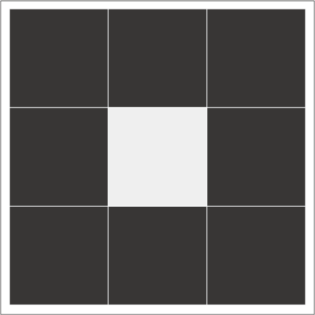
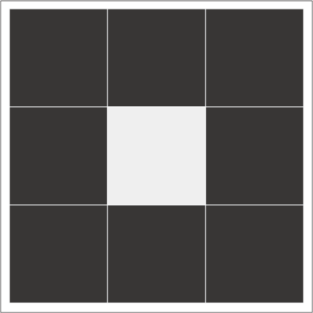

ヒントはこちら
第1ヒント
4thで配置した8枚のパネルはこれ以上動かす必要はありません。第2ヒント
迷路の盤面から「ライト」を探してみましょう。第3ヒント
答えは9文字の英単語です。web画面上の矢印と同様の矢印を、当てはめたパネルにも見つけることができます。最終解答が単語にならない場合
4thのパネル移動の段階で、90°右回転（サクライロ）、180°回転（ムラサキ）を間違えている可能性があります。パネル移動の際に色のルールをブルー以外にも適応させましょう。迷路を解き直すのが面倒な方へ
これが正しいパネル配置の様子です。